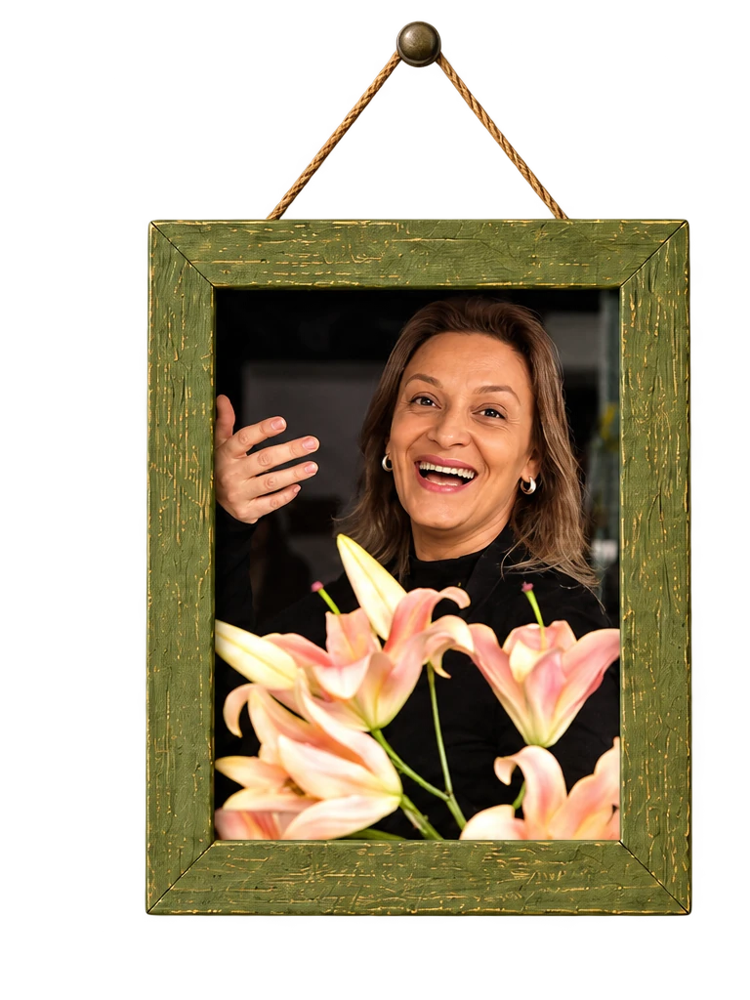
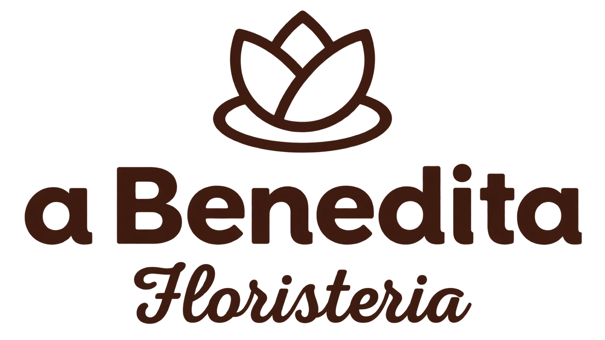
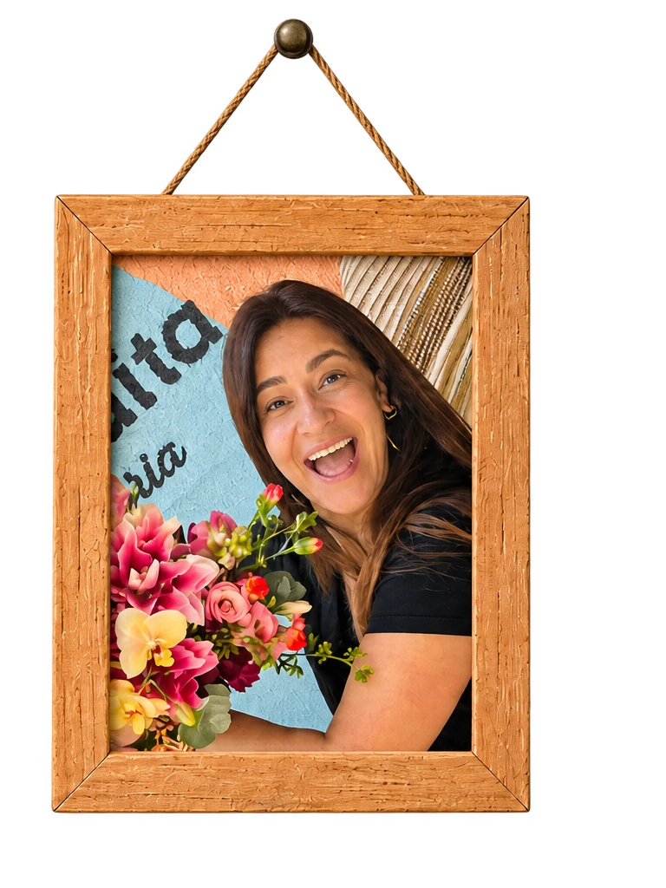

Simone Castro
História da Simone: como chegou à floricultura, o que fazia antes, o que a trouxe até aqui. Substituir pelo texto final.

WhatsAppBem-vindo ao site da a Benedita Floristeria.
Flor fresca do dia, montada à mão, aqui em Porto Alegre.

História da Simone: como chegou à floricultura, o que fazia antes, o que a trouxe até aqui. Substituir pelo texto final.

História da Ana Paula: a trajetória, a paixão pela montagem e pelos eventos, o que faz o trabalho das duas irmãs juntas tão especial no dia a dia. Substituir pelo texto final.
LOJA
Texto de marcação sobre a loja física.
Segundo parágrafo de marcação.
EVENTOS
Texto de marcação sobre eventos.
Segundo parágrafo de marcação.
ASSINATURAS
Texto de marcação sobre a assinatura.
Segundo parágrafo de marcação.
Monta a sacola com o que quiser.
Nome, endereço, ocasião e data.
O pedido chega pronto no nosso WhatsApp.
Combinamos entrega e pagamento na conversa.
Ninguém paga no site. O pagamento é combinado direto com a loja.
Ninguém paga no site. O pagamento é combinado na conversa.